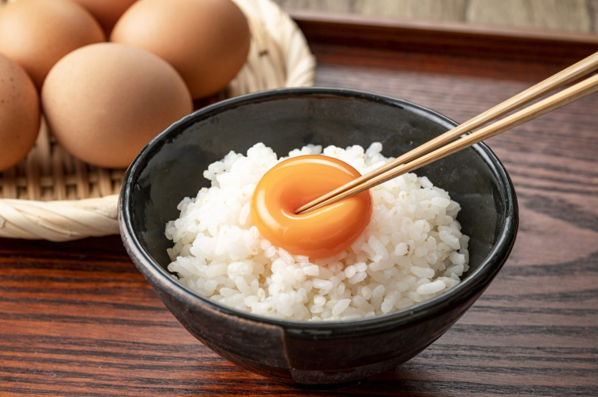

Raw egg over rice. Japanese soul food!

Colloquially known as TKG. This extremely simple, delicious and flexible dish is an absolute staple in Japan. Depending on your region, the raw egg may not be possible so below is an alternative
Ingredients
- An egg
- A bowl of rice
- Soy sauce
Preparation
The OG TKG
- Prepare a bowl of hot rice
- Crack an egg over the rice
- Mix vigorously
- Add a splash of soy sauce
- (Optional) season with a sprinkle of chili powder, crushed seaweed or any other topping to your liking
The alternative
- Prepare a bowl of hot rice
- In a pan, add a splash of oil and crack an egg. Start to scramble until lumps start to form, but not too dry. Before the egg is fully set, add to a bowl of steaming hot rice.
- Mix vigorously and the egg will continue to cook
- Add a splash of soy sauce
- (Optional) season with a sprinkle of chili powder
Back to home page